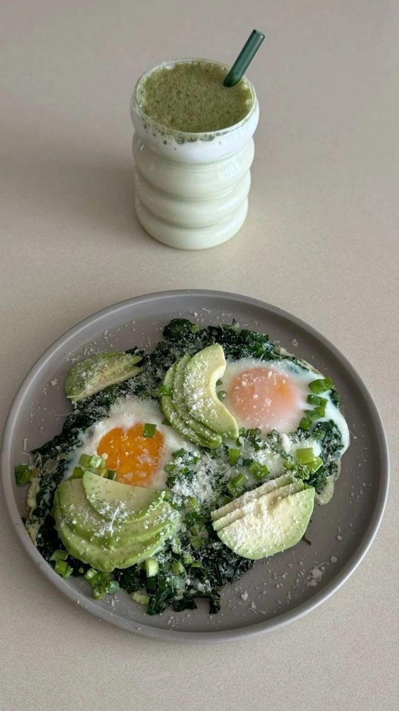

Week 3 · 2 minutes
Sunday, Oct 26
Sunday
check-in
Look back for one minute, plan ahead for one.
Your
week
3½ of 4
A
Anchor
B
Hinge
C
10-min
Walk
Zone 2
How was
it
?
vs last week
Energy
Last week: 6
7/10
Sleep
Last week: 5
6/10
Mood
Last week: 7
8/10
In one
line
Win of the week
What got stuck
What I'm adjusting
The 10-minute version counts.
You haven't missed twice in a row.
Save my week